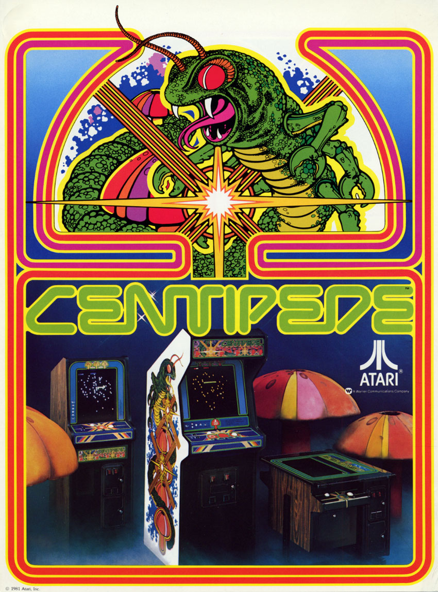

Centipede is a vertically oriented fixed shooter arcade game produced by Atari, Inc. in 1980. The game was designed by Ed Logg and Dona Bailey. The player fights off centipedes, spiders, scorpions and fleas, completing a round after eliminating the centipede that winds down the playing field.
Centipede was ported to Atari's own Atari 2600, Atari 5200, Atari 7800, and Atari 8-bit family. Under the Atarisoft label, the game was sold for the Apple II, Commodore 64, ColecoVision, VIC-20, IBM PC (as a PC booter), Intellivision, and TI-99/4A. Superior Software published the port for the BBC Micro.
The player is represented by a small, "somewhat humanoid head" at the bottom of the screen. The player moves the character about the bottom area of the screen with a trackball and fires laser shots at a centipede advancing from the top of the screen down through a field of mushrooms. Shooting any section of the centipede creates a mushroom; shooting one of the middle segments splits the centipede into two pieces at that point. Each piece then continues independently on its way down the board, with the first section of the rear piece becoming a new head. If the head is destroyed, the section behind it becomes the next head.
source: wikipedia